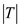

The transfer function of second order all-pass filter is,
.
The transfer function at  is,
is,
The transfer function of second order all-pass filter is,
.
The transfer function at is,
The magnitude of the transfer function at  is,
is,
Case 1:
The  factor of the zeros of a second-order all-pass filter is greater than the
factor of the zeros of a second-order all-pass filter is greater than the factor of the poles.
factor of the poles.
For , the transfer function is,
.
Case 2:
The  factor of the zeros of a second-order all-pass filter is lower than the
factor of the zeros of a second-order all-pass filter is lower than the factor of the poles.
factor of the poles.
For , the transfer function is,
.
The sketch of the magnitude  for both the cases is shown in Figure 1.